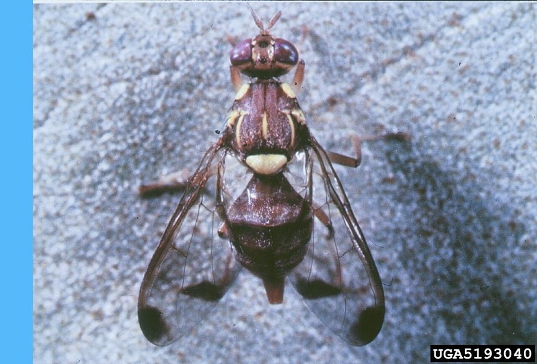

मेलन फ्रूट फ्लाईMelon Fruit Fly
Bactrocera cucurbitae · Tephritidae · INS-0270

- Scientific name वैज्ञानिक नाम
- Bactrocera cucurbitae (Coquillett, 1899)
- Family कुल
- Tephritidae
- Hindi हिंदी
- मेलन फ्रूट फ्लाई
- Local names स्थानीय नाम
- melon fruit fly
- Status here यहाँ की स्थिति
- native
- Movement आवागमन
- Resident, here all year
- Known from कहाँ दर्ज
- Others have published records from the wider Awadh–Purvanchal plain, none yet from Basti–Ayodhya अवध–पूर्वांचल से दूसरों के प्रकाशित अभिलेख, बस्ती–अयोध्या से अभी नहीं
- IUCN IUCN
- not evaluated
- Review समीक्षा
- not yet reviewed
When to look कब देखें
Present all year. साल भर मौजूद।
Tell it apart from इनसे अलग पहचानें
मेलन फ्रूट फ्लाई / Melon Fruit Fly
Bactrocera cucurbitae (Coquillett, 1899) — Tephritidae
मेलन फ्रूट फ्लाई — लौकी, तोरी, करेला, खीरा और तरबूज जैसी बेल वाली सब्जियों का एक बहुत नुकसानदायक नाशीकीट है। यह घरेलू मक्खी जैसी दिखने वाली एक पीले-भूरे रंग की मक्खी है जिसकी पीठ पर पीले निशान और पंखों पर काले-भूरे धब्बे होते हैं। मादा मक्खी अपने डंक जैसे अंग से कच्चे फलों में छेद करके अंडे देती है। अंदर पैदा होने वाले सफेद कीड़े (मैगट) फल के गूदे को सड़ा देते हैं जिससे फल मुड़कर गिर जाता है।
Quick Identification त्वरित पहचान
| Feature | Description |
|---|---|
| Wing pattern | Hyaline wings with a distinct brown band along the costal margin and a dark apical brown spot |
| Thoracic markings | Reddish-brown thorax adorned with bright yellow longitudinal vittae and prominent yellow humeri |
| Abdomen | Broadly oval reddish-brown abdomen marked with a prominent blackish T-shaped transverse band |
| Head & eyes | Large iridescent greenish-red compound eyes with a yellowish face bearing dark spots |
| Ovipositor | Female possesses a sharp, needle-like piercing ovipositor at the tip of the abdomen |
Medium-sized colourful fruit fly recognised by its patterned wings with a dark costal margin and apical spot, bright yellow thoracic stripes, and reddish-brown abdomen crossed by a dark T-shaped band.
Field tip: Look around ripening bitter gourds and ridge gourds in the morning for small wasps-like flies hovering and inserting their tail into soft fruits.
हिंदी: पीले-भूरे रंग की चमकदार मक्खी जिसके पारदर्शी पंखों के किनारे भूरी पट्टी और छोर पर एक काला धब्बा होता है। इसकी पीठ पर पीले रंग की धारियां होती हैं और यह फलों के ऊपर मंडराती है।
Morphology आकारिकी
Biometrics from open entomological literature:
| Feature | Characteristic | Source |
|---|---|---|
| Body coloration | Reddish-yellow to brownish-ochraceous with conspicuous bright yellow markings | Literature |
| Wing venation | Transparent wings with a continuous brown costal band and distinct apical patch | Literature |
| Scutellum | Bright sulphur-yellow, prominent, convex triangular plate behind thorax | Literature |
| Larval form | Cylindrical, legless, acephalic creamy-white maggot tapering toward anterior mouth-hooks | Literature |
| Typical dimension | Measurement not available in consulted open sources. | Open sources |
The adult fly has a robust, compact body with bright warning coloration. The head is yellowish with prominent multifaceted compound eyes that shine reddish-green in live individuals. The thorax is predominantly reddish-brown with three bright yellow longitudinal stripes and yellow humeral calli. The transparent wings feature a prominent brownish band along the costal margin and a characteristic dark brown smoky patch across the apical area. The abdomen is oval, reddish-yellow, and marked with a dark transverse band across the third segment. The larva is a typical cyclorrhaphous maggot, cream-coloured and legless, equipped with curved black sclerotized mouth hooks.
हिंदी: इसका शरीर लाल-भूरे और पीले रंग का होता है। इसके सीने पर पीले रंग की पट्टियां बनी होती हैं। इसके पंख कांच की तरह साफ होते हैं लेकिन उनके किनारों पर भूरी धारियां होती हैं। इसका बच्चा बिना पैर वाला सफेद कीड़ा होता है।
Behaviour & Ecology व्यवहार और पारिस्थितिकी
Adult flies are active during daytime hours, especially in early morning and late afternoon when humidity is high. During hot midday periods, they seek shelter in dense, shaded wild vegetation surrounding crop fields. Females utilize their sharp, sclerotized ovipositor to puncture the tender skin of developing cucurbit fruits, laying batches of elongate white eggs directly into the soft flesh. Upon hatching, the maggots tunnel inward, feeding gregariously on pulp and developing seeds. Secondary bacterial and fungal pathogens enter through the puncture wound, causing the fruit to rot rapidly and emit a sour odour.
हिंदी: यह दिन के समय उड़ने वाली मक्खी है जो सुबह और शाम को सबसे ज्यादा सक्रिय रहती है। मादा फल की चमड़ी में छेद करके गूदे के भीतर अंडे देती है। कीड़े अंदर ही अंदर फल को खाते हैं जिससे फल में फफूंद लग जाती है और वह सड़कर दुर्गंध देने लगता है।
Life Cycle / Phenology जीवन चक्र
Multiplies prolifically throughout the warm season from March to November across northern India. Eggs hatch within one to two days in warm weather. The maggots feed inside the decaying fruit through three instars over five to ten days. When fully developed, mature maggots exhibit a remarkable leaping ability, flexing their bodies to fling themselves out of the fallen fruit and burrowing into surrounding loose soil. In the soil, the maggot contracts into a barrel-shaped brown puparium, emerging as an adult fly after a week. In winter, flies overwinter as adults sheltering in evergreen shrubbery.
हिंदी: गर्म मौसम में इसका जीवन चक्र बहुत तेज होता है। फल के अंदर पलने के बाद जब कीड़े बड़े हो जाते हैं, तो वे उछलकर जमीन पर गिर जाते हैं और मिट्टी में दबकर प्यूपा बन जाते हैं। ठंड के दिनों में वयस्क मक्खियां झाड़ियों में छिपकर जाड़ा बिताती हैं।
Host Plants or Prey आहार
A major polyphagous pest highly specialized on the family Cucurbitaceae. Major cultivated hosts across eastern Uttar Pradesh include bitter gourd (Momordica charantia), bottle gourd (Lagenaria siceraria), pointed gourd (Trichosanthes dioica), sponge gourd (Luffa cylindrica), ridge gourd (Luffa acutangula), cucumber (Cucumis sativus), and watermelon (Citrullus lanatus). Occasionally attacks solanaceous fruits such as tomatoes.
हिंदी: यह मुख्य रूप से कद्दूवर्गीय (कुकरबिट) सब्जियों का कीड़ा है। लौकी, तोरी, करेला, परवल, खीरा, ककड़ी और तरबूज इसके प्रमुख आहार हैं। कभी-कभी यह टमाटर को भी नुकसान पहुंचा देती है।
Predators / Natural Enemies शत्रु
Suppressed by an array of generalist predators and parasitoids. Braconid parasitoid wasps, such as Fopius arisanus and Diachasmimorpha longicaudata, lay eggs into fly eggs and maggots within fruits. Generalist predators, including jumping spiders, ground beetles, ants, and robber flies, prey actively on adult flies and emerging puparia in the soil. Poultry and free-ranging ducks scratch up and consume buried pupae beneath trellis lines.
हिंदी: खेत में रहने वाले शिकारी जीव इसका नियंत्रण करते हैं। चींटियां और जमीनी भृंग मिट्टी में दबे प्यूपा को खा जाते हैं। मुर्गियां और बतखें जमीन खुरचकर इसके कीड़ों को चट कर जाती हैं। परजीवी ततैया इसके अंडों को नष्ट कर देती हैं।
Agricultural / Human Relevance कृषि प्रासंगिकता
Causes severe economic damage to cucurbit vegetable production across Uttar Pradesh, routinely inflicting severe crop yield reductions in cucurbit harvests. Infested fruits become curved, deformed, and unmarketable. Because maggots feed deep inside the fruit pulp, standard surface chemical insecticide sprays are largely ineffective and leave hazardous toxic residues on harvested produce. Recommended integrated pest management focuses on parapheromone male annihilation using cue-lure traps, field sanitation by collecting and burying all fallen fruits deep in soil, bagging young tender fruits with newspaper or cloth covers, and cultivating resistant hybrid varieties.
हिंदी: कद्दूवर्गीय सब्जियों में यह सबसे ज्यादा नुकसान करती है जिससे फल टेढ़े-मेढ़े होकर सड़ जाते हैं। इसके रोकथाम के लिए खेत में क्यू-ल्यूर वाले ट्रैप लगाने चाहिए, सड़े हुए गिरे फलों को जमीन में गहरा दबाना चाहिए और छोटे फलों को कपड़े या कागज से ढक देना चाहिए।
Expected Locally स्थानीय रूप से अपेक्षित
Not a field record. Written from published accounts for eastern Uttar Pradesh. No confirmed local sighting yet — if you have seen it, that is what the atlas needs.
अभी तक स्थानीय पुष्टि नहीं। यह विवरण प्रकाशित स्रोतों से है, किसी अवलोकन से नहीं।
Abundant across commercial vegetable tracts, riverbed cucurbit farms, and village kitchen gardens throughout eastern Uttar Pradesh. Observers in Basti and Ayodhya should inspect commercial bottle gourd and bitter gourd plots between April and September for punctured, rotting fruits.
GBIF holds published records from the wider Awadh–Purvanchal plain, none yet from Basti–Ayodhya.
A first local record for the atlas would be a clear photograph showing diagnostic features, accompanied by date, time, and precise location coordinates sent through the project's About page.
हिंदी: यह बस्ती और अयोध्या के कछारों में उगाई जाने वाली लौकी, करेले और तरबूज की फसलों पर बहुत आसानी से देखी जा सकती है। फल पर बैठी इस रंगीन मक्खी की फोटो खींचकर एटलस को भेजें।
Distribution वितरण
Global range: Native to tropical and subtropical Asia; widely introduced to the Pacific islands, parts of Africa, and Australia.
In India: Distributed throughout the subcontinent wherever cucurbit crops are cultivated.
In Uttar Pradesh: Universal across all agricultural zones, especially in riverine sandbar vegetable belts along the Ganga and Ghaghara.
In Basti district / eastern UP: Documented across vegetable-growing tracts of the Gangetic plain.
हिंदी: यह भारत सहित पूरे एशिया और प्रशांत महासागरीय देशों में पाई जाती है। उत्तर प्रदेश में गंगा और घाघरा की तराई में होने वाली तरबूज-सब्जी की खेती में इसका बहुत भारी प्रकोप रहता है।
Research Questions शोध प्रश्न
- What is the trapping efficiency of locally formulated cue-lure traps compared to commercial imported dispensers in eastern UP vegetable belts?
- How does summer riverbed sand temperature affect the mortality of pupating maggots in diara land cultivation? / क्या गर्मियों में रेतीली जमीन के अत्यधिक गर्म होने से इसके प्यूपा मर जाते हैं?
- Which native cucurbit landraces exhibit natural pericarp toughness that prevents female oviposition punctures?
- A schoolchild can examine a curved or deformed bitter gourd to see if there is an amber gum droplet marking a sting puncture / क्या कोई बच्चा मुड़े हुए करेले पर चिपचिपे गोंद जैसी बूंद देखकर मक्खी का डंक पहचान सकता है?
- How deep must infested dropped fruits be buried in clay soil to completely prevent adult fly emergence?
हिंदी: क्या फल मक्खी के डंक वाले फल पर चिपचिपा रस निकलता है? क्या सड़े हुए फलों को कीचड़ में गहरा दबाने से मक्खी बाहर निकलने से रुक जाती है?
Similar Species मिलती-जुलती प्रजातियाँ
| Species | How to tell apart | हिंदी | |
|---|---|---|---|
| Oriental Fruit Fly \ | Bactrocera dorsalis | Widespread dacine fruit fly with dark costal wing band, infesting fleshy tree fruits rather than cucurbits | ओरिएंटल फल मक्खी मुख्य रूप से आम और अमरूद जैसे फलों को नुकसान पहुंचाती है, बेल वाली सब्जियों को नहीं |
| Peach Fruit Fly \ | Bactrocera zonata | Reddish-brown dacine fly with clear wings lacking complete dark costal band, infesting peach and guava | आडू फल मक्खी के पंखों पर पूरी काली पट्टी नहीं होती और वह मुख्य रूप से अमरूद और आडू पर रहती है |
Field rule: Reddish-brown fruit fly with bright yellow thoracic stripes, dark T-shaped abdominal band, and wings marked with a brown costal band and apical spot.
हिंदी: पीले-लाल रंग की फल मक्खी जिसके सीने पर पीली धारियां हों, पेट पर अंग्रेजी के टी (T) जैसा निशान हो और पंख के किनारे भूरी धारी हो।
Taxonomy & Classification वर्गीकरण
Original description. Coquillett (1899), Entomological News, vol. 10, p. 129; described under the basionym Dacus cucurbitae.
Subspecies. Monotypic species. Formerly placed within the broad genus Dacus and subgenus Zeugodacus.
Family and order placement. Belongs to the true fruit fly family Tephritidae (subfamily Dacinae), order Diptera, class Insecta.
Phylogenetic notes. Member of the Bactrocera (Zeugodacus) generic complex, recently elevated by some tephritid taxonomists to generic status (Zeugodacus cucurbitae).
IUCN status rationale. Not currently evaluated on the IUCN Red List of Threatened Species.
हिंदी: इसका वैज्ञानिक विवरण कोक्विलेट ने 1899 में दिया था। पहले इसे डेकस वंश में रखा गया था। यह टेफ्रिटिड्डी कुल की सदस्य है।
Photo Gallery फोटो गैलरी
No photos yet — add field photos to media/species/melon_fruit_fly/ and run node scripts/sync_photos.js.
Photos needed आवश्यक फोटो
- [ ] Female fly resting on cucurbit fruit showing ovipositor and wing pattern (फल पर बैठी मादा मक्खी)
- [ ] Punctured young bitter gourd showing gum exudation and deformation (डंक लगा हुआ करेला)
- [ ] Cut open damaged fruit showing feeding maggots and pulp decay (कटे फल में सड़ता गूदा और मैगट)
References संदर्भ
- Original description: Coquillett, D. W. (1899). A new trypetid from Hawaii. Entomological News, 10(5), 129–130. (as Dacus cucurbitae).
- Bezzi, M. (1913). Indian trypaneids (fruit-flies) in the collection of the Indian Museum, Calcutta. Memoirs of the Indian Museum, 3, 53–175 (pp. 96–97).
- Kapoor, V. C. (1993). Indian Fruit Flies (Insecta: Diptera: Tephritidae). Oxford & IBH Publishing Co., New Delhi.
- National Institute of Plant Health Management & Directorate of Plant Protection, Quarantine and Storage. (2014). AESA Based IPM Package for Cucurbitaceous Vegetables. Department of Agriculture & Cooperation, Ministry of Agriculture, Government of India. URL: https://www.niphm.gov.in/IPMPackages/CucurbitaceousVegetable.pdf.
- GBIF Occurrence Data — Bactrocera cucurbitae, India (2025).
Source file: species/fauna/insects/melon_fruit_fly.md